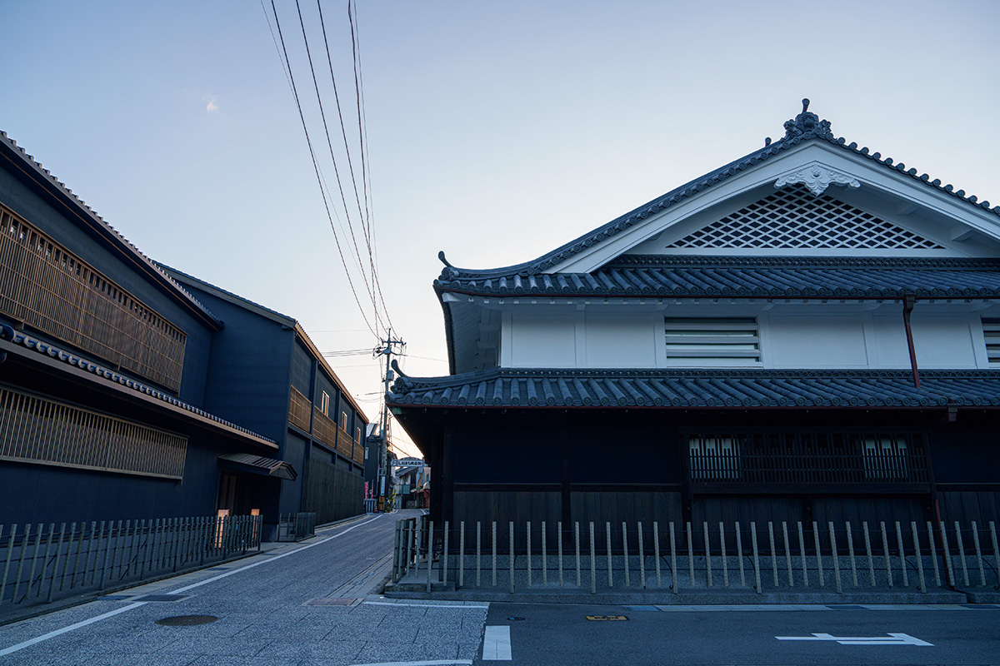
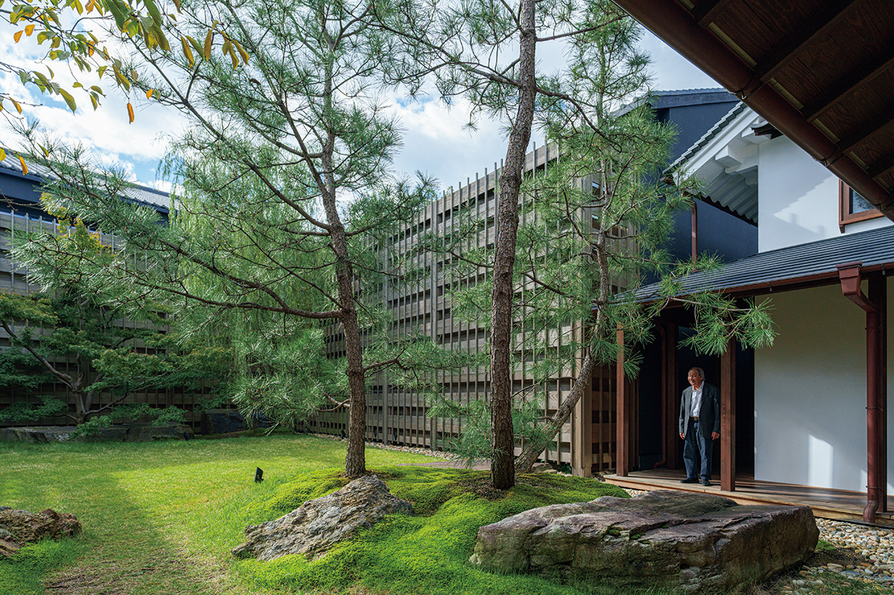
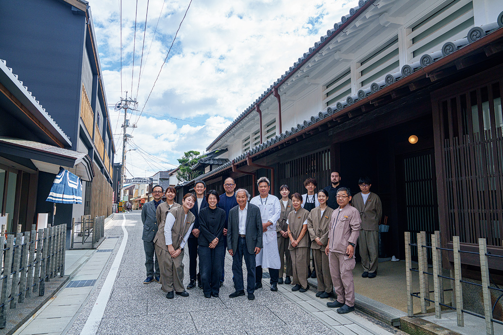
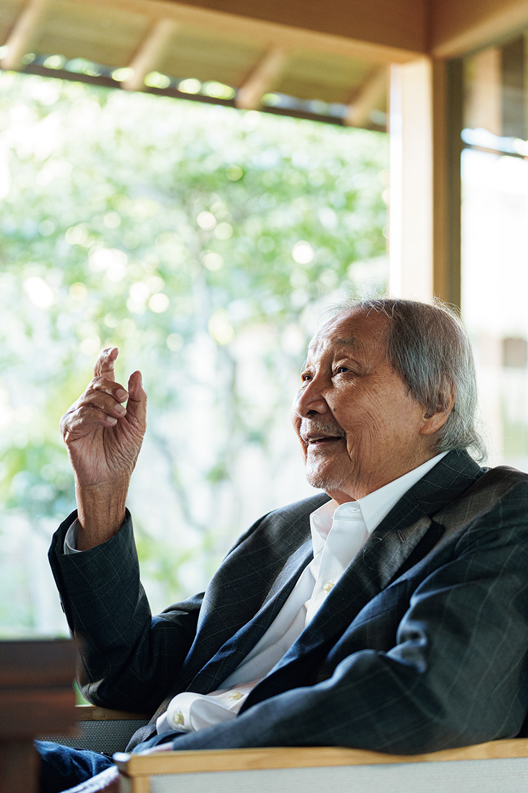
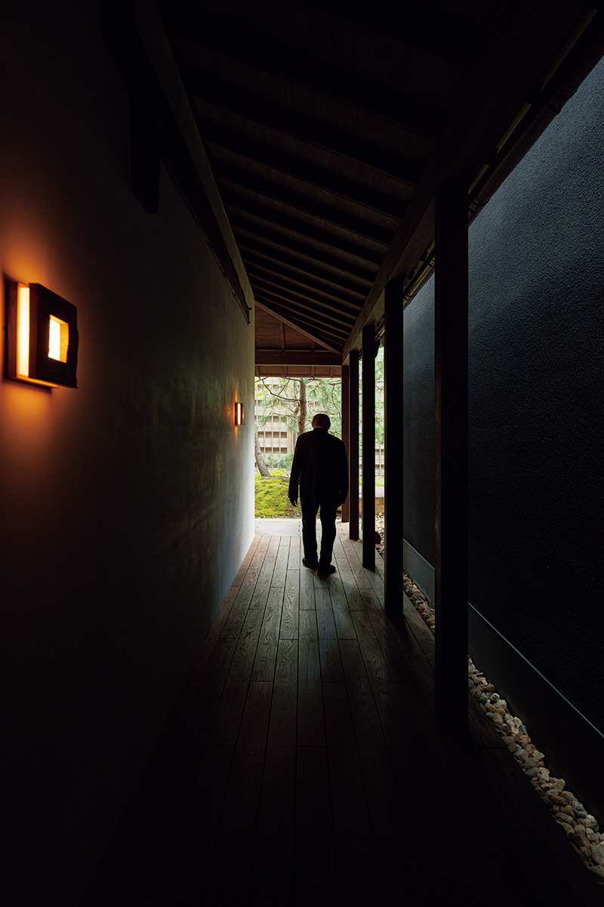
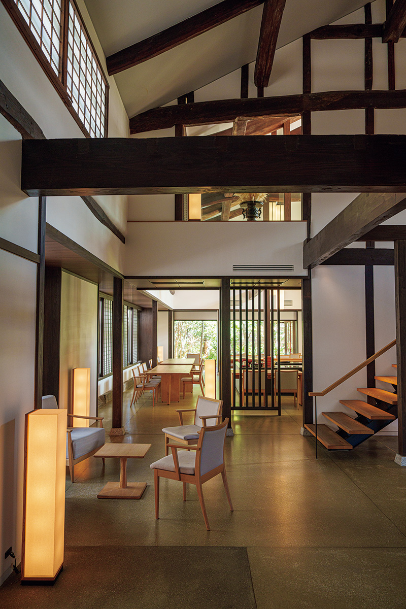
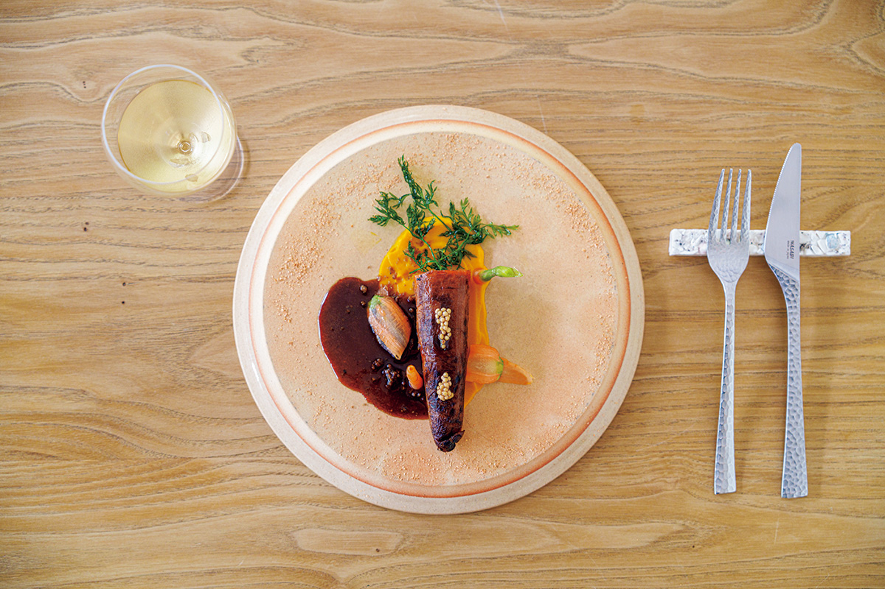
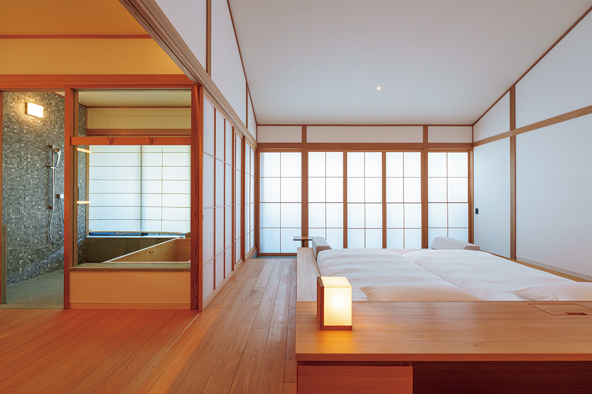
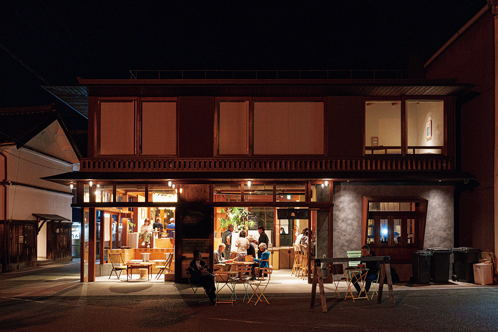

Префектура Хиросима · Сэтода на острове Икути · отель
«Azumi Setoda»: рёкан, который основатель Aman построил в Сэтоде

В марте 2021 года в Сэтоде, на острове Икути, открылся рёкан Azumi Setoda. Его задумал человек, который построил сеть Aman, и этот рёкан он считает попыткой заново определить, что такое японское гостеприимство.
Рёкан
Усадьба, которой больше 140 лет
Azumi Setoda стоит на улице Сиомати, в самом сердце Сэтоды, и занимает старинную усадьбу возрастом больше 140 лет. Внешний облик дома бережно восстановили, сохранив стены и кровлю, а внутри всё перестроили заново. Отделку доверили архитектору, который много лет изучает японское зодчество: он оставил усадьбе прежний вид и при этом сделал комнаты удобными для сегодняшней жизни.
Комнаты выходят во внутренний двор или к маленькому саду, и весь дом устроен так, чтобы гость чувствовал себя не в гостинице, а в чьём-то ухоженном доме. Именно эту домашнюю теплоту основатель и хотел сохранить, но показать её заново, без музейной застылости.


Хозяин
Давняя мечта о японском рёкане
Эдриан Зекка родился в 1933 году. Молодым журналистом он в 1950-е годы работал в Токио и полюбил страну; уже позже он основал сеть курортов Aman, которая началась в 1988 году с небольшого курорта в Таиланде. Около десяти лет назад он отошёл от Aman и занялся другой задачей, о которой думал давно: сделать японский рёкан и рассказать через него миру о японском гостеприимстве.
В Токио он не раз возвращался, а в Японии его привлекала именно небольшая гостиница с внимательным, почти домашним уходом за гостем, где живёт культура места. Первым таким рёканом и стала Azumi Setoda. Зекка говорит, что в основе всего в итоге оказывается человек: разница между часами с конвейера и часами, которые мастер собрал руками, такая же, как между большим отелем и маленьким рёканом.


В Сэтоде он видел не только дом, но и весь остров: рёкан должен был дать работу и вернуть жизнь на улицу. Спустя три с лишним года после открытия это стало заметно, и своим следующим местом в Японии он выбрал Тохоку.
Кухня
Французская кухня из ближайших 50 километров
Ужин в рёкане строят на вкусе и аромате продуктов Сэтоути, но готовят по французской школе. Шеф берёт только то, что растёт и ловится в радиусе примерно пятидесяти километров, и даже держит собственный огород. Так рождается ужин, в котором главным может оказаться самый простой овощ.


Номера
Комнаты вокруг двора
Номера собраны вокруг внутреннего двора, и у каждого свой характер. На первом этаже есть комната «Сад» площадью 50 квадратных метров: при ней маленький дворик-коробочка, раздвижные окна с бумажной решёткой открывают вид, пол выложен камнем, а зимой его греет подогрев из-под пола. Большие окна и низкое освещение делают комнату тихой даже в разгар дня.

Улица
Сэтода меняется
Azumi Setoda стоит не в одиночку: через дорогу, напротив порта, светится ночью комплекс SOIL Setoda, а рядом на той же улице работает общественная баня yubune. Гости рёкана ходят по улице пешком, заходят в соседние лавки, и постепенно улица оживает не только для туристов, но и для тех, кто здесь живёт.

Azumi Setoda
- Адрес
- префектура Хиросима, Ономити, Сэтода-тё Сэтода, 269
- Телефон
- +81 845-23-7911
- Цены
- от 121 000 иен за человека с двумя приёмами пищи, с налогом и обслуживанием
- Сайт
- azumi.co
Фото: Ацуси Ямахира.